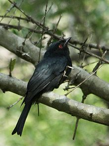
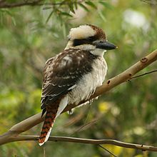
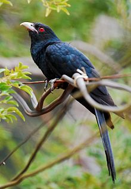
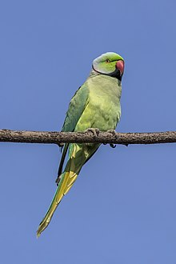
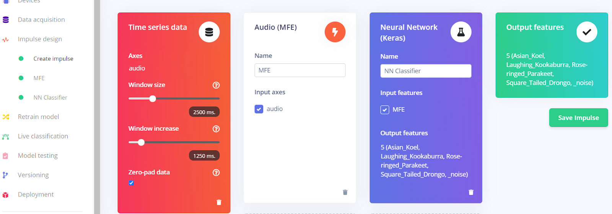
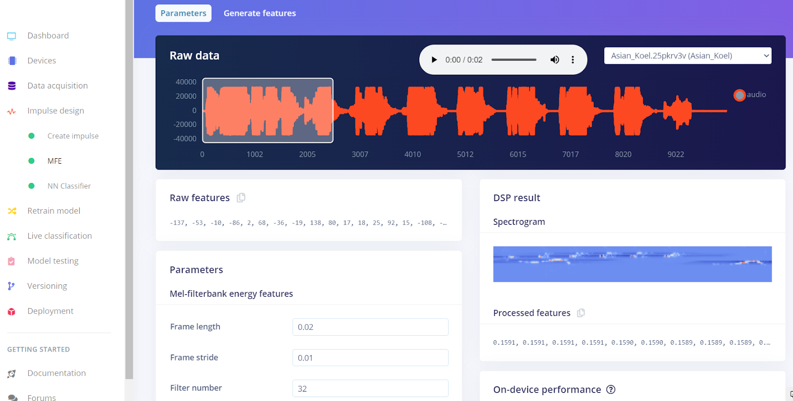
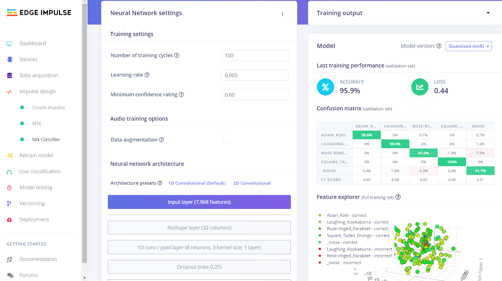
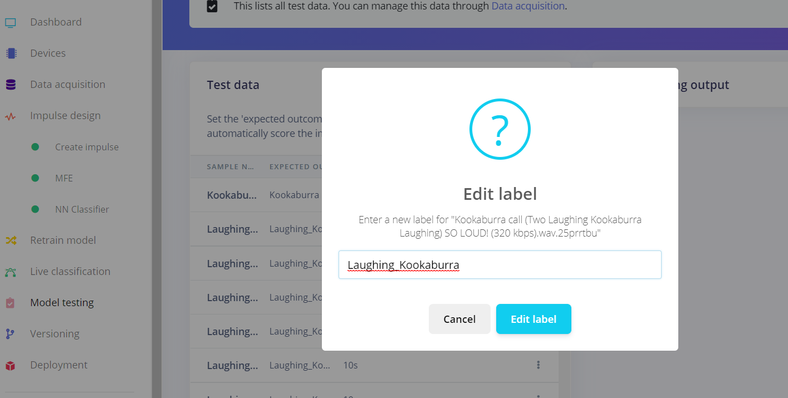
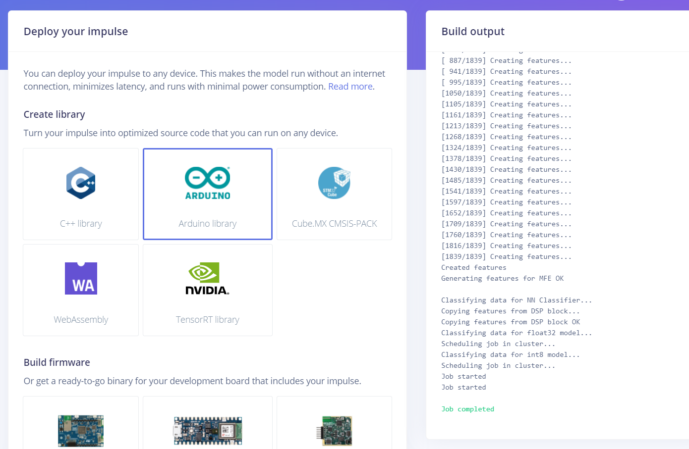

Bird sound classifier on the edge
Note: This is an auto-generated website from Bird sound classifier repo README.md
Arduino Nano 33 BLE Library
Bird sound classifier library,select version which is most relevant to you.
BLE logging can be tested bird-sound-classifier-on-the-edge.
This library is only compiled and tested on Arduino Nano 33 BLE Sense.
Edge Impulse Public Project
Note: Each project apart from birds has an another
label _noise
- Bird sound classifier v1.0.1-alpha is the version with 6 birds but the accuracy is 88%.We are working on improving it by processing the training set even more.
- Bird sound classifier is the version with 4 birds and with an accuracy of 94%.Reccomended for new users who want to try out edge impulse and this project.
Check the releases section to see the more details about the birds that are used in each project
Background
There are around 18000 bird species that have been identified across the globe and in India alone, there are over 15000 known bird lovers. This provides a large enough base to collect data as well as provide services to.
The project attempts to recognize different bird calls by continuously listening to the audio through the on board mic of the nano33 BLE Sense. The bird call heard will be consumed by the model to classify it as one amongst the trained birds.
If no bird calls are heard, then the audio would be classified as background noise since we have included the background noise also during training. This project can be helpful for people who are interested in birding and would like to understand the habitat or patterns of the bird calls.
Overview
Interfacing Arduino Nano 33 BLE Sense with Edge Impulse
Building a machine learning model
Deploying the model to the device
Interfacing Arduino Nano 33 BLE Sense with Edge Impulse
Edge Impulse fully supports the Arduino Nano 33 BLE Sense, a compact development board containing a Cortex-M4 microprocessor, motion sensors, a microphone, and BLE. The studio supports sampling of raw data, development of models, and deploying trained machine learning models. It costs roughly $30 and is available from Arduino and a variety of distributors.
This can easily achived by installing all the dependencies on your system from Edge Impulse docs.
Once you have configured flashed the Nano 33 BLE sense with edge-impulse framework we can continue with next step.
Building a machine learning model
we require a lot of bird data and it is impractical to find data that is high in quantity as well as quality, we took data for specific birds from Xeno-Canto, which is a large database dedicated to sharing bird sounds from all over the world.
We picked 4 birds that are commonly found in our area.
Asian Koel
Laughing Kookaburra
Square Tailed Drongo
Rose-ringed Parakeet
|  |  |  |  |
|---|---|---|---|
| Square Tailed Drongo | Laughing Kookaburra | Asian Koel | Rose-ringed Parakeet |
Building a Dataset
We downloaded around 20-25 audio files for each bird and worked on preprocessing using a software called Audacity. And then proceeded to augment the data, while infusing noise. And this helped us generate 200 files of 10 seconds each for all four of the above mentioned labels as well as a label for noise alone.
We now have a balanced dataset with 33 minutes and 20 seconds of data for each label in training and 8 minutes and 20 seconds of test data.

Designing an Impulse
You can create an impulse once the training is in place. An impulse takes raw data, cuts it into smaller windows, extracts features with signal processing blocks, and then classifies new data with a learning block. Signal processing blocks are used to make raw data easy to process by returning the same values for the same input, whereas learning blocks learn from previous experiences.
After some experimenting, we settled with the following parameters:
- Window Size = 2500 ms
- Window Increase = 1250 ms
We can build windows that overlap by setting a Window increase that is smaller than the Window size. Each overlapping window is a unique example of audio that conveys the sample's label, despite the fact that they may contain comparable data. We may make the most of the training data by employing overlapping windows.
Now, onto selecting blocks:
- Processing Block - Audio (MFE)
- Learning Block - Neural Network (Keras)

Configuring the MFE Block
After exploring a few variations for the parameters of Mel-filterbank energy features, we determined that the default values were the best.

Configuring the Neural Network Model
The default values of the Neural Network model in the Edge Impulse studio gave the best results.

Classifying New Data
To ensure that the model works as well on new and previously unseen data as it has for the training data, we can use the option of ‘Live classification’ provided by the studio.
Click on Live classification in the left hand menu. Your device should show up in the 'Classify new data' panel. Capture 5 seconds of background noise by clicking Start sampling.
We performed live classification of data using both our smartphones as well as the Arduino Nano 33 BLE Sense.
Model Testing
Every Edge Impulse project has a test dataset in addition to its training data. The test dataset is immediately saved with the samples taken in Live classification, and the Model testing page displays all of the test data.
To use the sample that was captured for testing, the expected outcome should be edited accordingly. Click the ⋮ icon and select Edit expected outcome, then enter the relevant label, as shown below.

Now, select the sample using the checkbox to the left of the table and click Classify selected.
We can observe that the model's accuracy has been rated based on the test data.
Model troubleshooting
As expected, the performance of the model isn’t always great in the first attempt, which can be so due to several factors. Some of the modifications that can help improving the accuracy of the model are:
- Scouring the dataset for anomalies/low quality data.
- Change in parameters such as Window Size and Window Increase.
- Change in parameters of the learning and processing blocks. Or change the blocks if there is a more suitable one. (Example, switch between MFCC and MFE).
- Change in sample time.
- Adjustments in the number of epochs.
Deploying the model to the device
- Edge Impulse project> Deployment.
- Create the full library which contains the impulse and all external required libraries. Select Arduino library and click Build to create the library

- Download and extract the .zip file.
- Open the Arduino IDE > Choose Sketch > Include Library > Add .ZIP library.
- Find the folder (do not go inside the folder), and select Choose.
- Then, load an example by going to File > Examples > Project name - Edge Impulse > static_buffer.
The example application will now load the impulse.

|
|---|
| This will run the signal processing pipeline, and then classify the output |